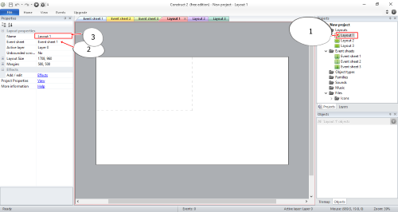

#การกําหนดว่า Layout ให้ใช้กับEvent sheetไหน l Construct 2
#การแก้ปัญหาใส่คําสั่งแล้วไม่ทํางานตามคําสั่งที่ใส่ไว้
1.คลิกไปที่ Layout ที่ต้องการกําหนดให้Event sheet ทํางานด้วย
2.กดเลือก Event sheet ที่ต้องการกําหนดให้ทํางานด้วย
3.กดเลือก Layout ให้ตรงกับชื่อ Layout ที่เราคลิก
4.เป็นอันเสร็จเรียบร้อย

...* Layoutหลายอันสามารถปรับให้ใช้Event sheetภายในอันเดียวได้*


วัดวีรโชติธรรมมาราม